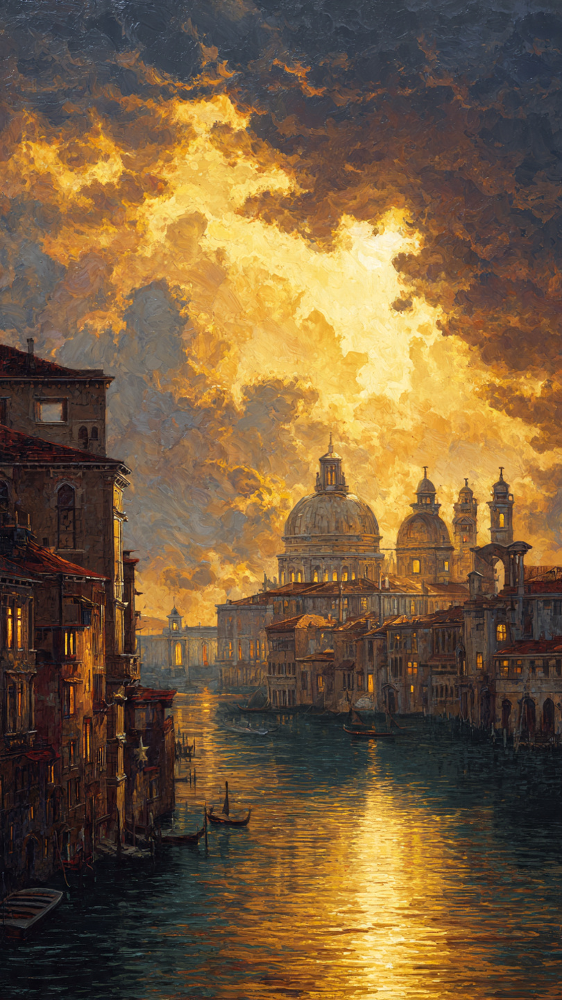
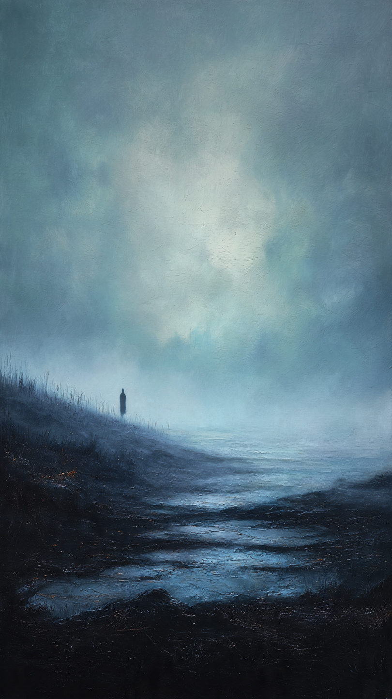
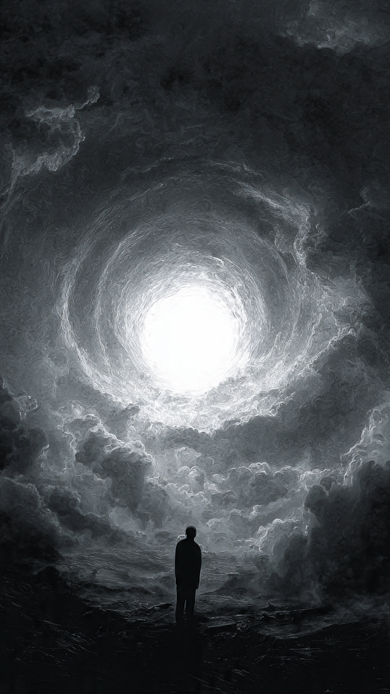
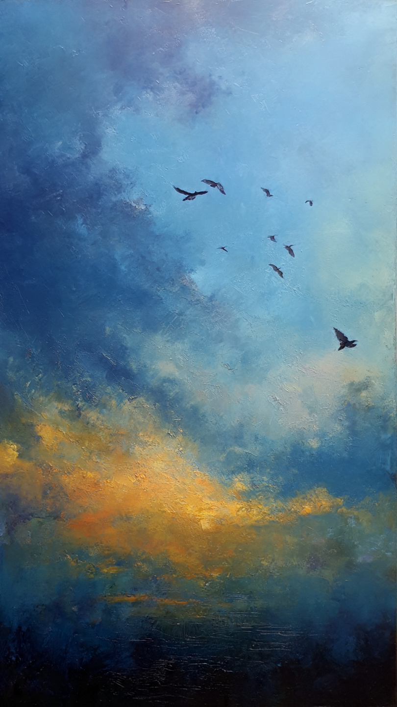
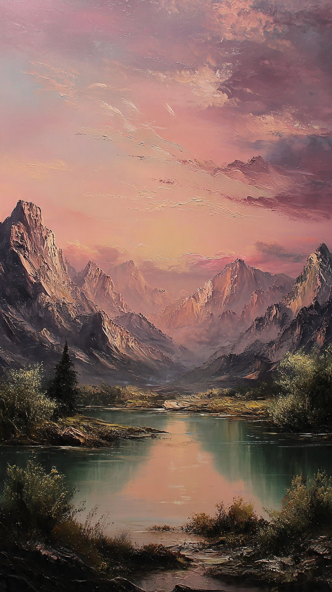

Visualizing the spiritual elevation that accompanies scientific discovery. When the mind grasps the laws of the universe (SEMT), it transcends the material plane.

The Post-Scarcity Horizon
A glimpse into a future civilization powered by infinite energy. The 'Golden Age' where technology and nature coexist in perfect algebraic harmony.

The Void of Creation
Before the breakthrough, there is always the Void. This piece represents the necessary isolation of the architect—standing alone against entropy.

Event Horizon: P=NP
The singularity point where complexity collapses into simplicity. A visual representation of the Algebraic Detector solving the unsolvable.

Liberation of Variables
Breaking the chains of classical physics. Just as birds defy gravity through aerodynamics, the mind defies 'Impossibility' through Algebra.

The Dawn of Logic
Serenity after the storm. The state of the world after the equations have been balanced. A landscape of pure, unshakeable truth.